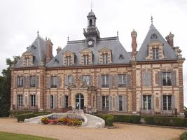
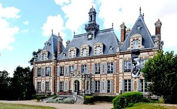
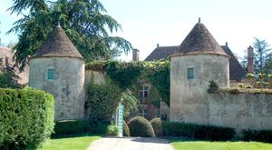
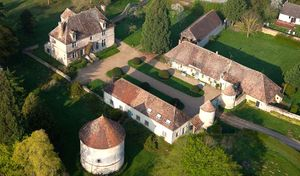
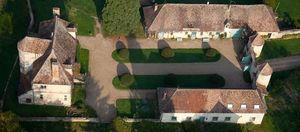

Recensement Jean-Claude Truffet





| Département | 28 — Eure-et-Loir |
| Canton | Épernon |
| Commune | Nogent le roi |
| Type d'édifice | Forteresse |
| Période d'origine | XIII-XV |
| Coordonnées GPS | 48° 38' 48,14" Nord, 1° 31' 53,86" Est |
Deux châteaux dans cet article Nogent le Roi et Vacheresse Basse. NOGENT-LE-ROI, le château primitif avait l'aspect d'une forteresse qui fut cédée par la comtesse de Blois au Roi Philippe Auguste en 1218. . Pendant la guerre de Cent ans, elle fut confisquée au profit de la couronne de France qui conserva la seigneurie jusqu'au milieu du XVe siècle, lorsque Charles VII la céda à Pierre de Brézé, ce dernier fit rebâtir le château qui subsista jusqu'à la Révolution, époque à laquelle il fut vendu comme bien national et démoli. Le château actuel a été édifié en 1863 en style néo Louis XIII par Alfred Chapelain, les épis de faîtage, datant du XVIIe siècle, proviennent du château de Grogneul. Les décors intérieurs sont très représentatifs du Second Empire ainsi que l'éolienne qui alimentait autrefois la pièce d'eau. Des vestiges de la forteresse subsistent vers le nord: un mur de courtine entre deux tours carrées, dont une a gardé sont système défensif, et une poterne. Nogent-le-Roi a été bâti dans un style néo-Louis XIII, sur l'emplacement d'un ancien château, lorsque le roi de France, Charles VII, lui céda la seigneurie. Il reste de l'ancien château son mur de courtine et ses deux tours carrées. Les vestiges de la forteresse médiévale, ainsi que l'éolienne pour l'alimentation en eau datant du Second Empire, sont inscrits aux M.H. depuis 1993.
VACHERESSES BASSE, les premières fondations du manoir remontent en 1393. Des générations de seigneurs des Feugerets succèderont au premier maître des lieux, Fleurant des Feugerais en 1478. Transmis par alliance à la famille de Graffard, il est ensuite vendu au comte de Nogent en 1587 par Madame de l'Aulnaye. À partir de cette époque, la seigneurie suivra la mouvance de Nogent le Roi. Parmi les propriétaires successifs figurent le duc de Noailles, le marquis de Noailles, les époux Rameau de Prémouville de Maisonthon et la baronne de la Barre de Nanteuil. Puis de 1880 à 1980, la propriété passe de mains en mains. Joseph Hémard, dessinateur humoriste y passe quelques années, entre 1940 et 1950, de même le romancier Gilbert Dupé. De nos jours, Michèle Battut, peintre, perpétue la lignée des artistes qui dans ce domaine emprunt d'histoire, puisent énergie et inspiration. La propriété a traversé les siècles sans perdre de son mystère ni de sa superbe. Traversée par la rivière que l'on appelle le Vacheresses ou le Néron, selon que l'on habite Vacheresses ou Néron, elle comprend plusieurs corps de bâtiments dont un pigeonnier, l'entrée se distingue par un portail relevé par la présence de deux tours de guet.
Famille de Pierre de Brézé et Alfred Chapelain
"
Deux châteaux dans cet article Nogent le Roi et Vacheresse-Basse , gps 48° 38' 48" nord, 1° 31' 54" est Nogent GPS : 48° 38' 48,14" Nord, 1° 31' 53,86" Est